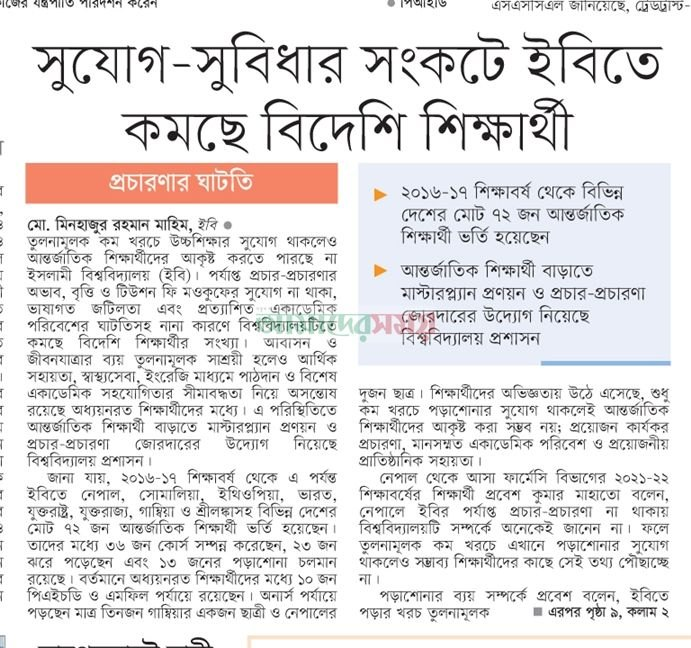

সুযোগ সুবিধার সংকটে ইবিতে কমছে বিদেশি শিক্ষার্থী
Foreign Student Enrollment Declines at IU Amid Lack of Adequate Facilities

তুলনামূলক কম খরচে উচ্চশিক্ষার সুযোগ থাকলেও আন্তর্জাতিক শিক্ষার্থীদের আকৃষ্ট করতে পারছে না ইসলামী বিশ্ববিদ্যালয় (ইবি)। পর্যাপ্ত প্রচার-প্রচারণার অভাব, বৃত্তি ও টিউশন ফি মওকুফের সুযোগ না থাকা, ভাষাগত জটিলতা এবং প্রত্যাশিত একাডেমিক পরিবেশের ঘাটতিসহ নানা কারণে বিশ্ববিদ্যালয়টিতে কমছে বিদেশি শিক্ষার্থীর সংখ্যা। আবাসন ও জীবনযাত্রার ব্যয় তুলনামূলক সাশ্রয়ী হলেও আর্থিক সহায়তা, স্বাস্থ্যসেবা, ইংরেজি মাধ্যমে পাঠদান ও বিশেষ একাডেমিক সহযোগিতার সীমাবদ্ধতা নিয়ে অসন্তোষ রয়েছে অধ্যয়নরত শিক্ষার্থীদের মধ্যে। এ পরিস্থিতিতে আন্তর্জাতিক শিক্ষার্থী বাড়াতে মাস্টারপ্ল্যান প্রণয়ন ও প্রচার-প্রচারণা জোরদারের উদ্যোগ নিয়েছে বিশ্ববিদ্যালয় প্রশাসন।
জানা যায়, ২০১৬-১৭ শিক্ষাবর্ষ থেকে এ পর্যন্ত ইবিতে নেপাল, সোমালিয়া, ইথিওপিয়া, ভারত, যুক্তরাষ্ট্র, যুক্তরাজ্য, গাম্বিয়া ও শ্রীলঙ্কাসহ বিভিন্ন দেশের মোট ৭২ জন আন্তর্জাতিক শিক্ষার্থী ভর্তি হয়েছেন। তাদের মধ্যে ৩৬ জন কোর্স সম্পন্ন করেছেন, ২৩ জন ঝরে পড়েছেন এবং ১৩ জনের পড়াশোনা চলমান রয়েছে। বর্তমানে অধ্যয়নরত শিক্ষার্থীদের মধ্যে ১০ জন পিএইচডি ও এমফিল পর্যায়ে রয়েছেন। অনার্স পর্যায়ে পড়ছেন মাত্র তিনজন গাম্বিয়ার একজন ছাত্রী ও নেপালের দুজন ছাত্র। শিক্ষার্থীদের অভিজ্ঞতায় উঠে এসেছে, শুধু কম খরচে পড়াশোনার সুযোগ থাকলেই আন্তর্জাতিক শিক্ষার্থীদের আকৃষ্ট করা সম্ভব নয়; প্রয়োজন কার্যকর প্রচারণা, মানসম্মত একাডেমিক পরিবেশ ও প্রয়োজনীয় প্রাতিষ্ঠানিক সহায়তা।
নেপাল থেকে আসা ফার্মেসি বিভাগের ২০২১-২২ শিক্ষাবর্ষের শিক্ষার্থী প্রবেশ কুমার মাহাতো বলেন, নেপালে ইবির পর্যাপ্ত প্রচার-প্রচারণা না থাকায় বিশ্ববিদ্যালয়টি সম্পর্কে অনেকেই জানেন না। ফলে তুলনামূলক কম খরচে এখানে পড়াশোনার সুযোগ থাকলেও সম্ভাব্য শিক্ষার্থীদের কাছে সেই তথ্য পৌঁছাচ্ছে না।
পড়াশোনার ব্যয় সম্পর্কে প্রবেশ বলেন, ইবিতে পড়ার খরচ তুলনামূলক কম। ব্যক্তিগত ব্যয়ের ধরন অনুযায়ী জীবনযাত্রার খরচে পার্থক্য হলেও মাসে গড়ে তিন হাজার টাকায় খাবারের ব্যবস্থা করা সম্ভব। তবে আন্তর্জাতিক শিক্ষার্থীদের জন্য বৃত্তি, টিউশন ফি মওকুফ কিংবা স্বাস্থ্যবীমার ব্যবস্থা না থাকাকে বড় সীমাবদ্ধতা হিসেবে উল্লেখ করেন তিনি। এসব বিষয়ে অভিযোগ জানিয়েও কার্যকর সাড়া পাননি বলে জানান এই শিক্ষার্থী।
ভাষাগত জটিলতা ও প্রশাসনিক কার্যক্রম নিয়েও অভিজ্ঞতার কথা তুলে ধরেন প্রবেশ। তার ভাষ্য, শিক্ষকরা বাংলা ও ইংরেজি দুই ভাষায় কথা বললেও পাঠদানের ক্ষেত্রে সবসময় প্রত্যাশিত ইংরেজি মাধ্যম নিশ্চিত হয় না। পরীক্ষার প্রশ্নপত্র ইংরেজিতে পাওয়া গেলেও কিছু প্রশাসনিক কার্যক্রমে বাংলা ব্যবহারের কারণে সমস্যায় পড়তে হয়। এ ছাড়া বিদেশি শিক্ষার্থীদের জন্য আলাদা একাডেমিক মেন্টর বা টিউটর না থাকায় অনেক ক্ষেত্রে সহপাঠী কিংবা শ্রেণি প্রতিনিধির ওপর নির্ভর করতে হয়।
তবে গাম্বিয়া থেকে আসা অ্যাকাউন্টিং অ্যান্ড ইনফরমেশন সিস্টেমস বিভাগের ২০২১-২২ শিক্ষাবর্ষের শিক্ষার্থী সালিমা জালোর অভিজ্ঞতায় উঠে এসেছে আরও কিছু সমস্যা। খাবার, চিকিৎসা ও দৈনন্দিন জীবনযাপনের ব্যয় নিজেদের বহন করতে হওয়ায় বিদেশি শিক্ষার্থীদের ওপর আর্থিক চাপ তৈরি হয়। অন্য কিছু সরকারি বিশ্ববিদ্যালয়ে আন্তর্জাতিক শিক্ষার্থীদের জন্য আবাসিক হলে খাবার, মৌলিক স্বাস্থ্যসেবা ও মাসিক ভাতার মতো সুবিধা থাকলেও ইবিতে এসব সহায়তার সুযোগ সীমিত। সালিমা বলেন, বিদেশি শিক্ষার্থীদের জন্য অন্তর্ভুক্তিমূলক পরিবেশ ও সামাজিকভাবে একীভূত হওয়ার পর্যাপ্ত উদ্যোগ নেই। সহপাঠীদের সঙ্গে নিয়মিত যোগাযোগ, একাডেমিক আলোচনা এবং প্রত্যাশিত ইংরেজি মাধ্যমে পাঠদানের সুযোগ নিয়েও তার অসন্তোষ রয়েছে।
আবাসন ও জীবনযাত্রার ক্ষেত্রে অবশ্য কিছু ইতিবাচক দিকও রয়েছে। বিদেশি শিক্ষার্থীদের অনেকে হলের পরিবেশ, নিরাপত্তা, ওয়াই-ফাই ও পরিচ্ছন্নতার ব্যবস্থাকে মোটামুটি সন্তোষজনক মনে করেন। তবে বিশুদ্ধ পানির ব্যবস্থা, স্বাস্থ্যসেবা এবং দৈনন্দিন প্রয়োজন মেটাতে আরও প্রাতিষ্ঠানিক সহযোগিতা চান তারা। পাশাপাশি পর্যাপ্ত ল্যাব সুবিধার অভাবও কিছু শিক্ষার্থীর উদ্বেগের কারণ। কয়েকজন শিক্ষার্থীর ভাষ্য, তাদের পরিচিত দুজন পড়াশোনা ছেড়ে নিজ দেশে ফিরে গেছেন। ভাষাগত সমস্যা, শিক্ষার মান নিয়ে উদ্বেগ, ল্যাব সুবিধার সীমাবদ্ধতা ও বৃত্তির অভাবকে তাদের ফিরে যাওয়ার কারণ হিসেবে উল্লেখ করা হয়েছে।
এ বিষয়ে বিশ্ববিদ্যালয়ের আন্তর্জাতিক শিক্ষার্থী সম্পর্ক সংস্থার পরিচালক অধ্যাপক ড. আসাদুজ্জামান বলেন, আন্তর্জাতিক শিক্ষার্থীর সংখ্যা বাড়াতে বিশ্ববিদ্যালয় প্রশাসন কাজ করছে। এজন্য একটি মাস্টারপ্ল্যান তৈরি করা হয়েছে। নভেম্বরের মাঝামাঝি সময়ে এ বিষয়ে সিদ্ধান্ত আসতে পারে। তিনি বলেন, বিদেশি শিক্ষার্থী ভর্তিতে প্রচার-প্রচারণা বাড়ানোর জন্য বুকলেট তৈরি এবং বিশ্ববিদ্যালয়ের ওয়েবসাইটসহ বিভিন্ন মাধ্যমে তথ্য প্রচারের উদ্যোগ নেওয়া হচ্ছে। বৃত্তির বিষয়ে তিনি জানান, এটি নীতিগত সিদ্ধান্তের বিষয়; এক্ষেত্রে বিশ্ববিদ্যালয় মঞ্জুরি কমিশনের (ইউজিসি) সিদ্ধান্ত প্রয়োজন।
শিক্ষার্থীদের মেন্টরশিপের বিষয়ে অধ্যাপক আসাদুজ্জামান বলেন, এ লক্ষ্যে ‘ডিজিটাল লার্নিং রিসোর্স সেন্টার’ করা হয়েছে। এ নিয়ে শিক্ষার্থীদের সঙ্গে কয়েক দফা আলোচনাও হয়েছে। এর মাধ্যমে শিক্ষার্থীদের সঙ্গে যোগাযোগ বৃদ্ধি এবং বাইরের গবেষকদের সঙ্গে সহযোগিতামূলক কাজের সুযোগ সহজ হবে বলে আশা করছেন তিনি।
অন্যদিকে বিশ্ববিদ্যালয়ের ট্রেজারার অধ্যাপক ড. ইদ্রিস আলী বলেন, তিনি কিছুদিন আগে দায়িত্ব নিয়েছেন। বিষয়টি নিয়ে এখনও বিস্তারিত আলোচনা হয়নি। তবে বিদেশি শিক্ষার্থীদের ভাষাগত জটিলতা রয়েছে বলে তিনি জানেন। সব মিলিয়ে, ইবিতে বিদেশি শিক্ষার্থীদের জন্য কম খরচে পড়াশোনার সুযোগ থাকলেও আন্তর্জাতিক পর্যায়ে পরিচিতি বৃদ্ধি, আর্থিক সহায়তা, ভাষাবান্ধব পাঠদান ও একাডেমিক পরিবেশ উন্নয়নের ঘাটতি বড় চ্যালেঞ্জ হয়ে উঠেছে।